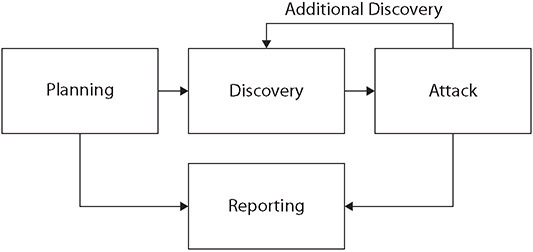

Table of Contents for
CompTIA Security+ All-in-One Exam Guide, Sixth Edition (Exam SY0-601)), 6th Edition
- Cover (01:09 mins)
- Title Page (01:09 mins)
- Copyright Page (03:27 mins)
- Dedication (01:09 mins)
- About the Authors (04:36 mins)
- Contents (19:33 mins)
- Preface (02:18 mins)
- Acknowledgments (01:09 mins)
- Introduction (12:39 mins)
-
Part I Threats, Attacks, and Vulnerabilities (01:09 mins)
- Chapter 1 Social Engineering Techniques (35:39 mins)
- Chapter 2 Type of Attack Indicators (37:57 mins)
- Chapter 3 Application Attack Indicators (33:21 mins)
- Chapter 4 Network Attack Indicators (39:06 mins)
- Chapter 5 Threat Actors, Vectors, and Intelligence Sources (44:51 mins)
- Chapter 6 Vulnerabilities (31:03 mins)
- Chapter 7 Security Assessments (23:00 mins)
- Chapter 8 Penetration Testing (25:18 mins)
-
Part II Architecture and Design (01:09 mins)
- Chapter 9 Enterprise Security Architecture (26:27 mins)
- Chapter 10 Virtualization and Cloud Security (25:18 mins)
- Chapter 11 Secure Application Development, Deployment, and Automation Concepts (27:36 mins)
- Chapter 12 Authentication and Authorization (33:21 mins)
- Chapter 13 Cybersecurity Resilience (39:06 mins)
- Chapter 14 Embedded and Specialized Systems (41:24 mins)
- Chapter 15 Physical Security Controls (49:27 mins)
- Chapter 16 Cryptographic Concepts (42:33 mins)
-
Part III Implementation (01:09 mins)
- Chapter 17 Secure Protocols (20:42 mins)
- Chapter 18 Host and Application Security (46:00 mins)
- Chapter 19 Secure Network Design (67:51 mins)
- Chapter 20 Wireless Security (25:18 mins)
- Chapter 21 Secure Mobile Solutions (43:42 mins)
- Chapter 22 Implementing Cloud Security (24:09 mins)
- Chapter 23 Identity and Account Management Controls (33:21 mins)
- Chapter 24 Implement Authentication and Authorization (37:57 mins)
- Chapter 25 Public Key Infrastructure (55:12 mins)
- Part IV Operations and Incident Response (01:09 mins)
- Part V Governance, Risk, and Compliance (01:09 mins)
- Part VI Appendixes and Glossary (01:09 mins)
- Glossary (65:33 mins)
- Index (67:51 mins)
CHAPTER 8
Penetration Testing
In this chapter, you will
• Learn penetration testing concepts
• Learn about types of passive and active reconnaissance
• Explore various team exercise types associated with penetration testing
Penetration testing is a structured form of testing defenses using the methodologies employed by attackers. These exercises can be performed in a variety of different ways, which will be explored in the sections that follow.
Certification Objective This chapter covers CompTIA Security+ exam objective 1.8: Explain the techniques used in penetration testing.
Penetration Testing
Penetration testing simulates an attack from a malicious outsider—probing your network and systems for a way in (often any way in). Penetration tests, or pen tests for short, are often the most aggressive form of security testing and can take on many forms, depending on what is considered “in” or “out” of scope. For example, some pen tests simply seek to find a way into the network—any way in. This can range from an attack across network links, to social engineering, to having a tester physically break into the building. Other pen tests are limited—only attacks across network links are allowed, with no physical attacks.
Regardless of the scope and allowed methods, the goal of a pen test is always the same: to determine if an attacker can bypass your security and access your systems. Unlike a vulnerability assessment, which typically just catalogs vulnerabilities, a pen test attempts to exploit vulnerabilities to see how much access they allow. Penetration tests are very useful in the following ways:
• They can show relationships between a series of “low-risk” items that can be sequentially exploited to gain access (making them a “high-risk” item in the aggregate).
• They can be used to test the training of employees, the effectiveness of your security measures, and the ability of your staff to detect and respond to potential attackers.
• They can often identify and test vulnerabilities that are difficult or even impossible to detect with traditional scanning tools.
An effective penetration test offers several critical elements. First, it focuses on the most commonly employed threat vectors seen in the current threat environment. Using zero-day threats that no one else has does not help a firm understand its security defenses against the existing threat environment. It is important to mimic real-world attackers if that is what the company wants to test its defenses against. Second, an effective penetration test focuses on real-world attacker objectives, such as getting to and stealing intellectual property (IP). Just bypassing defenses, but not obtaining the attacker’s objectives, again, does not provide a full exercise of security capabilities.
Numerous penetration test methodologies are employed by penetration testers to manage the process of a penetration test. The most recognized is the Open Source Security Testing Methodology Manual (OSSTMM) method. For web applications, the Open Web Application Security Project (OWASP) is the most recognized standard in the industry. The National Institute of Standards and Technology (NIST) has released SP 800-115, “Technical Guide to Information Security Testing and Assessment,” which includes the basic process diagram shown in Figure 8-1. The Penetration Testing Methodologies and Standards framework (PTES) and the Information System Security Assessment Framework (ISSAF) are two additional popular frameworks. All of these frameworks define a process, with the NIST model being the simplest. The importance of the process model is to have a plan that all team members can use to understand where they are in the process and the relationships between major tasks.

Figure 8-1 NIST Penetration Test process model from SP 800-115
Known Environment
Known environment (white box) testing is almost the polar opposite of unknown environment (black box) testing (discussed next). Sometimes called clear box testing, white box techniques test the internal structures and processing within an application for bugs, vulnerabilities, and so on. A white box tester will have detailed knowledge of the application they are examining—they’ll develop test cases designed to exercise each path, decision tree, input field, and processing routine of the application.
Known environment testing is often used to test paths within an application (if X, then go do this; if Y, then go do that), data flows, decision trees, and so on. Sometimes the term white box testing is applied to network assessments where the tester will have detailed knowledge of the network, including but not limited to IP addresses, network routes, and valid user credentials.
Unknown Environment
Unknown environment (black box) testing is a software-testing technique that consists of finding implementation bugs using malformed/semi-malformed data injection in an automated fashion. Unknown environment techniques test the functionality of the software, usually from an external or user perspective. Testers using black box techniques typically have no knowledge of the internal workings of the software they are testing. They treat the entire software package as a “black box”—they put input in and look at the output. They have no visibility into how the data is processed inside the application, only the output that comes back to them. Test cases for unknown environment testing are typically constructed around intended functionality (what the software is supposed to do) and focus on providing both valid and invalid inputs.
Unknown environment software testing techniques are very useful for examining any web-based applications, which are typically subjected to a barrage of valid, invalid, malformed, and malicious input from the moment they are exposed to public traffic. By performing unknown environment testing before an application is released, developers can potentially find and correct errors in the development or testing stage.
Unknown environment testing can also be applied to networks or systems. Pen tests and vulnerability assessments are often performed from a purely external perspective, where the testers have no inside knowledge of the network or systems they are examining.
Partially Known Environment
So, what happens when you mix a bit of known environment testing and a bit of unknown environment testing? You get partially known environment (gray box) testing. In a partially known environment test, the testers typically have some knowledge of the software, network, or systems they are testing. For this reason, partially known environment testing can be very efficient and effective because testers can often quickly eliminate entire testing paths, test cases, and toolsets and can rule out things that simply won’t work and are not worth trying.
Rules of Engagement
The rules of engagement associated with a penetration test are critical for several reasons. First and foremost, the activities associated with a penetration test are illegal if not authorized, and the rules of engagement specify the legal authority that the penetration testers have in performing their duties. The rules of engagement also establish the boundaries associated with the test so that it is actually exercising the functions desired by the customer. If a penetration tester performs activities outside the rules of engagement, they may be of no value to the enterprise and are thus wasted effort, and in many cases can cause problems. In cases where the enterprise incident response function is either part of the test or is informed to ignore specific activities, having this information coordinated via rules of engagement and proper on-site management is essential. Having an incident response (IR) team activated and spending energy when not part of the test is wasteful to a larger group than just the penetration team.
Typical rules of engagement will include a boundary of what is in scope and what is not. If machine IP addresses are being given to the penetration testing team, then a list of in- and out-of-bounds addresses should be provided. If the machines in scope are to be discovered, then a clear notation of what is not in bounds is needed. Other items might be elements such as time of testing activity. Performing a test during a busy business period might not be advised because of bandwidth and processing load issues. The scope of activities to be performed should obviously be nondestructive, but what constitutes proof of compromise needs to be determined. Any changes to the environment should be noted and either removed or clearly provided to the blue team. How the penetration testers should interact with other employees when discovered should also be included, as should a complete contact list of whom to call when something happens that requires immediate enterprise attention.
Lateral Movement
Lateral movement, sometimes referred to as network lateral movement, refers to the process used by attackers to move deeper into a network to get to the target data. In most cases, the initial entry into a system is via a user account that does not have access to the desired material, nor does the account have the appropriate levels of permissions. Through a series of specific activities, an attacker can elevate their level of privilege, as shown in the next section, and also move to other machines deeper in the network. This process of moving across a network is referred to as lateral movement and is a common event for advanced attackers. It also represents one of the points where defenders can catch an attacker, because in most cases these lateral movements are not normal activities for the user account being used.
Privilege Escalation
Privilege escalation is the process of gaining increased privileges for an account. This can be done in a variety of ways—sometimes legitimate, sometimes via a bug or vulnerability. Gaining root or admin access is always a goal for an attacker, because this gives them additional powers on a system that makes their job easier and opens up pathways that are otherwise closed to them. The pathways to privilege escalation for a penetration tester include things such as using a local administrator account, stealing credentials to an account that has administrative rights, and exploitation of a vulnerability that results in privilege escalation.
Some of these paths are easy to block—blocking local administrator accounts and significantly limiting the number of users with native administrative ability are important. Also, monitoring some administrative events such as account creation and account escalation can enable defenders to see when an attacker uses an elevated privilege for specific actions.
There are two types of privilege escalation: horizontal and vertical. In horizontal privilege escalation, the attacker expands their privileges by taking over another account and misusing the legitimate privileges granted to the other user. This is frequently done with lateral movement. This is also why restricting accounts with administrative access is vital, as it reduces the targets for horizontal privilege escalation.
In vertical privilege escalation, the attacker attempts to gain more permissions or access with an existing account they have already compromised. An attacker using a regular user-level account on a network can attempt to gain administrative permissions via exploiting vulnerabilities in processes or services running with administrative privilege. This is why restricting the number of processes or services with administrative permission is important, as it reduces this attack surface area. Vertical privilege escalation requires more sophistication and is the main technique employed by advanced persistent threats (APTs).
Persistence
Persistence is the ability to exist beyond a machine reboot or after disconnection. The term advanced persistent threat (APT) refers to a methodology that is focused first and foremost about maintaining persistence. This means the attacker can and will come back into the network, and with the use of good persistence mechanisms and different accounts, it will not be obvious when they reenter. Persistence can be achieved via a variety of mechanisms, such as by creating fake accounts, installing backdoors, using bots that call out through the network to allow the attacker a means of returning back into the network, and manipulating OS items such as Dynamic Link Libraries (DLLs) or permissions.
Cleanup
Attacking a system can leave a lot of evidence laying around. Testing vulnerabilities and trying access control systems creates a pile of failed events associated with pen testing and attacking a system. One of the important steps that can be taken to avoid detection is cleaning up what messes you make. Cleanup, or covering one’s tracks, is an essential step in a professional’s toolkit. Clearing logs, blocking remote logging, messing with system history, and using reverse shells and Internet Control Message Protocol (ICMP) tunnels to avoid detection and logging are some of the methods employed. The use of rootkits or trojans to modify the OS so that specific account-based activities are not logged is one of the methods used by APT attacks. As an attacker moves laterally within the network and escalates privileges, covering their tracks behind them makes it very difficult for defenders to find the attacker once they have moved to a different account or a different machine.
Bug Bounty
Bug bounty programs are mechanisms where companies pay hackers for revealing the details of vulnerabilities that they discover, providing the companies an opportunity to correct the issues. Most bug bounties pay some form of cash reward, with several major companies like Microsoft, Apple, and Google paying up to six-digit rewards for very critical vulnerabilities. One of the important elements to understand is that for bug hunting to be legal, the firm must have an established bug bounty program, and the hunting activity must be in accordance with that program. Accessing a system and exploiting vulnerabilities on another person’s or company’s network without permission is a crime, and the bug bounty program can provide such permission if it is followed properly. Finding a vulnerability and attempting to sell it to a company without a bug bounty program is often met with a very strong legal response and potentially a criminal investigation.
Pivoting
Pivoting is a technique similar to lateral movement. In pivoting, one moves to a new location in a network and begins the attack process over again, performing scans to see machines that were not visible from the outside. The whole purpose of lateral movement is to go to where the data is, and pivoting is one of the key methods of learning where to move next. The process works as follows: Gain an initial foothold based on what you can see and do from outside the network. Then, from this new machine inside the network, begin the process over again and move deeper. Rinse and repeat. To cross a screened subnet (DMZ) takes a couple of pivots. To move into a protected enclave takes another pivot or two. Pivot, move, pivot again, move again—this is how an attacker or a pen tester gets deeper in the network.
One of the giveaways of this activity is internal scanning. Although it is common to see multiple scans occurring outside the network, once an attacker is inside the network in an area where there is no legitimate reason for scanning activity, a scan reveals that someone is “looking.” Slowing down their scans is one method an attacker can use to avoid detection, but this stretches out their engagement, which is a cost factor for pen testers but not necessarily one for APTs.
Passive and Active Reconnaissance
Reconnaissance can be one of two types: passive or active. Passive reconnaissance is performed using methods to gain information about targeted computers and networks without actively engaging with the target systems and thus avoiding detection. Using Google searches and third-party data repositories like DNS and IP registration records are techniques the attacker can use to provide a lot of information without ever touching the targets, thus completely avoiding detection.
In active reconnaissance, the attacker engages with the target system, typically conducting a port scan to find any open ports. Active reconnaissance involves using packets that can be traced; it involves engaging services that can be logged. Also, when active reconnaissance hits a machine set up as a honey trap, it provides evidence of activity that might look legit but isn’t, because these devices are specifically not used as part of the enterprise—other than as a trap.
Passive reconnaissance has limits on how much an attacker can learn, but it’s completely stealthy. Active reconnaissance is much more informative, but it tells the machines they are being “attacked.” The key is to use passive reconnaissance first, and only use active reconnaissance as necessary to get a job done. When an attacker is sneaking into a network, being quiet can be important.
Drones
Drones are unmanned aerial platforms capable of carrying cameras, mobile devices, and other items across normal boundaries such as walls, fences, and checkpoints. This provides pen testers a means of getting closer to signals such as wireless networks and then recording traffic. While the use of drones to capture network traffic may seem esoteric, this technique has a name, war flying, and it is described in the next section.
War Flying
Using a drone to fly over a facility and capture wireless network traffic is called war flying. For example, if an office on the 28th floor of a building, with restricted elevators and physical access, flying a drone up to just outside the windows can provide pen testers access to wireless signals not available on the ground. And while flying a drone over a sensitive site such as a military base might be unadvisable, doing so in urban settings to gain access, including visual access via windows, is not as uncommon as one might imagine. What you can use drones for is limited mainly by your imagination. Just imagine if you could position your workstation where you place a drone—what might you see and interact with? You might be able to capture packets with passwords, for example, because at 28 stories in the air, no one is worried about eavesdroppers. You can capture machine names, IP addresses, and so much.
War Driving
War driving is the same concept as war flying, but rather than using a drone to capture the traffic, one simply drives past the points of access. Mapping the access points, including geographic information, has become a common activity, with many such maps already published online. Whether the target of a pen test is within the mapped area or you use anonymous access points to hide your own location, finding and using open access points is a useful tool in your pen tester toolkit. Numerous software packages support the functions of war driving, and the feature set of some of these packages has become fairly extensive, including adding geolocation information as well as building databases of the associated metadata with an open access point.
War driving is a follow-on technique of war chalking, which is the marking of curbs and sidewalks with chalk to create symbolic representations of observed open wireless networks in the area. This is a modern-day set of hobo markings, providing information to fellow travelers of the location and availability of open wireless networks.
Another variant of these attack methods is war shipping, where the attacker ships a specially set up mobile phone to a location. This device has a large external battery and special software. The phone is constantly running and collecting network data, and at periodic intervals, it uses its cellular capability to package and send out bursts of collected data. If you ship a phone to someone while they are on vacation, for example, the box can sit for days on the victim’s desk, unopened, while the eavesdropping device records and sends out traffic for days. Again, this is a method of bypassing gates and guards, and is easily thwarted if a central mail room opens all packages and inspects their contents.
Footprinting
Footprinting, also called reconnaissance, is the first step in gaining active information on a network. Using footprinting, a pen tester can gather information about computer systems and the entities they belong to, and in some cases user information as well. The primary method of gathering this information is via network sniffing and the use of scanning software. Once a network is mapped via footprinting, the pen tester can make decisions about which machines to perform vulnerability mapping on, and in some cases, which machines to avoid, such as honeypots.
OSINT
OSINT (open source intelligence) is the technique of using publicly available information sources to gather information on a system. OSINT is not a single method but rather an entire set of both qualitative and quantitative methods that can be used to collect useful information. If an attack is going to employ social engineering methods, then the OSINT steps are used to gain information about the users and find methods that will improve the odds of a successful campaign. If the targets are network machines, then it can be useful to gather information from sites such as IP address registrars, DNS servers for mail server addresses, and other external-facing systems that require their addresses be known in order to function.
Items such as PR notices from a company about its adoption of new software can provide pen testers with valuable information about the systems they will be looking at. From employee postings on social media to HR postings of job openings, the list of potential sources and levels of detail associated with the information can be significant and, in many cases, extremely useful. At the beginning, a pen tester may have zero knowledge of a system and its components, but after some OSINT work, the level of information can increase significantly, thus changing an unknown environment (black box) type of encounter to at least a partially known environment (gray box) type of encounter.
Exercise Types
Security exercise types include those focused on offense, defense, or a mix of offense and defense. Different colors are used to denote the different teams that participate in an exercise. These exercises can be created to test different aspects—from technical to managerial to top-level management actions. The objective of the exercises is to test capability, practice skills, learn options, and develop strategies in a nonthreatening environment.
Red Team
Red teams are composed of members who are focused on offense. Red team members use their skills to mimic a real-world threat environment and provide a test of a firm’s defensive capabilities. Red teams are frequently third-party contractors, as their skill set is specialized and the required skill level is high. Depending on the scope of an exercise, red team members may vary based on the systems and protocols being tested, and having a large pool of experienced personnel is another reason most red team work is outsourced to firms that specialize in it and keep large teams for contracts.
Blue Team
The blue team is the defense team and, as such, is typically an in-house operation, unless the defensive efforts are outsourced. When you outsource your defense, this adds a layer of complexity to the use of exercises, as this activity has to be negotiated and contracted with your outsourced security provider as well. Blue team members come from the IT and security operations departments, and they typically perform two functions. The first is establishing defenses, configuring defensive elements such as firewalls and security appliances, managing permissions, and logging. The second involves monitoring and incident response functions. In this role, they are on the lookout for attacks and manage the system’s responses to any unauthorized behaviors observed.
White Team
When an exercise involves scoring and/or a competition perspective, the team of judges is called the white team. If the exercise is such that it requires an outside set of coordinators to manage it, independent of the defending team, these coordinators are also called the white team. White team members are there to ensure that the actual exercise stays on track and employs the desired elements of a system.
Purple Team
A purple team is composed of both red team and blue team members. These team members work together to establish and test defenses. Many times, when you engage a third-party red team, it will include a couple blue team members to help manage your team’s responses to the attack vectors being used. At times it may also be useful to have a red team member working with your blue team, helping them understand the next steps from a red team (attacker) perspective. The objective of all exercise teams is to improve a firm’s cybersecurity posture, and having the right experts on both sides to help train a firm’s overall blue team operations and strategies is an efficient method of advancing defensive capabilities.
Chapter Review
In this chapter, you became acquainted with the tools and techniques of penetration testers. The chapter opened with an examination of penetration testing and the characteristics of the environment. The first section included information on known, unknown, and partially known environments and the characteristics of each. Then rules of engagement were covered, followed by the techniques of lateral movement and privilege escalation. The topics of persistence and cleanup were also covered. Bug bounty programs and pivoting concluded the first major section.
An examination of the tools and techniques of active and passive reconnaissance was provided in the major next section. Topics included drones, war flying, war driving, and footprinting. This section ended with a discussion of open source intelligence (OSINT).
The chapter closed with an examination of the different exercise types and the teams used in these exercises. This section covered the composition and use of red, blue, white, and purple teams.
Questions
To help you prepare further for the CompTIA Security+ exam, and to test your level of preparedness, answer the following questions and then check your answers against the correct answers at the end of the chapter.
1. Which of the following teams is commonly used for active pen testing?
A. Red team
B. Black team
C. White team
D. Green team
2. War flying is a term to describe which of the following?
A. Pen testing networks on commercial planes
B. The use of aerial platforms to gain access to wireless networks
C. Driving around and sampling open Wi-Fi networks
D. The use of pen testing techniques against the Defense Department
3. When an attacker moves to a new machine and rescans the network to look for machines not previously visible, what is this technique called?
A. Lateral movement
B. Privilege escalation
C. Persistence
D. Pivoting
4. What is the most important first step in a penetration test?
A. OSINT
B. Rules of engagement
C. Reconnaissance
D. Privilege escalation
5. Covering one’s tracks to prevent discovery is also known as what?
A. Lateral movement
B. OSINT
C. Cleanup
D. Pivoting
6. When a pen tester uses OSINT to gain information on a system, the type of environment can be changed from ______ to _______.
A. closed, open
B. unknown, known
C. secure, vulnerable
D. unknown, partially known
7. Which team involves members who emulate both attackers and defenders?
A. Purple team
B. Gold team
C. Blue team
D. White team
8. OSINT involves which of the following?
A. Passive reconnaissance
B. Active reconnaissance
C. Port scanning
D. Persistence
9. Which of the following is a formal approach to identifying system or network weaknesses and is open to the public?
A. Active reconnaissance
B. Passive reconnaissance
C. OSINT
D. Bug bounty
10. What is the purpose of a white team?
A. To represent senior management
B. To provide judges to score or rule on a test
C. To represent parties that are targets in a pen test
D. To provide a set of team members with offense and defensive skills (all stars)
Answers
1. A. The red team is a team of offense actors used in penetration testing.
2. B. War flying is the use of drones, airplanes, and other flying means of gaining access to wireless networks that are otherwise inaccessible.
3. D. The key part of the question is the rescanning. Pivoting involves the rescanning of network connections to find unknown or previously unseen connections.
4. B. The rules of engagement describe the scope of an engagement and provide important information regarding contacts and permissions. Obtaining these rules is essential before any pen test work begins.
5. C. Cleanup involves the steps of clearing logs and other evidence to prevent one from being easily discovered.
6. D. OSINT provides information about systems and their addresses and connections, including applications. This takes the status of a system from a completely unknown environment to a partially known environment.
7. A. Purple teams have both offensive (red) and defensive (blue) personnel to provide a balanced response.
8. A. OSINT is a passive activity, so passive reconnaissance is the correct answer. All of the other answers involve active measures.
9. D. Bug bounty programs can open up vulnerability discovery to the public with a set of rules that manages the disclosure process and the engaging of the systems.
10. B. When an exercise involves scoring and/or a competition perspective, the team of judges is called the white team. If the exercise is such that it requires an outside set of coordinators to manage it, independent of the defending team, they are also called a white team. White team members are there to ensure that the actual exercise stays on track and involves the desired elements of a system.